Modern Nails Vancouver: Trends, Styles & Where to Book in 2026
Nail trends in Vancouver have shifted a lot in the last couple of years. Less bling, more clean lines. Less neon, more soft neutrals with a twist. Here is what is actually popular in the city right now — and how to get the look without leaving with chips two days later.
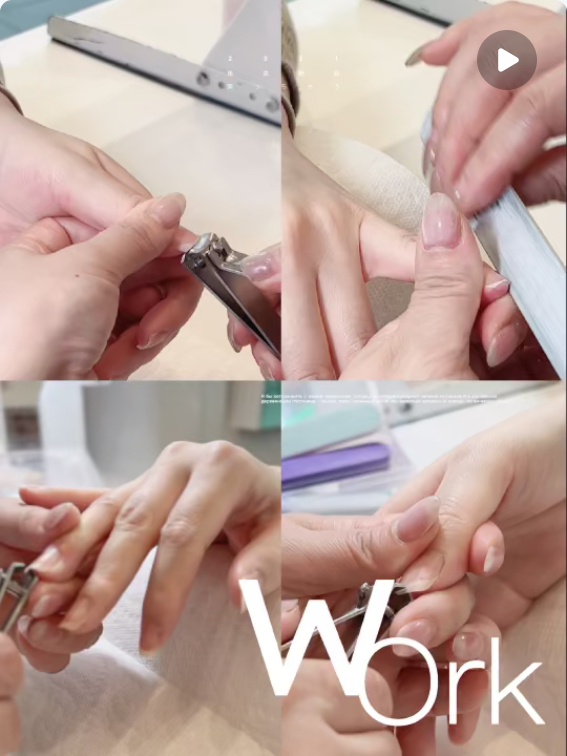
What Counts as a "Modern" Nail Set Right Now
Modern nails in Vancouver lean toward clean, lived-in finishes. Think milky bases, soft chrome, and short almond shapes that look polished without screaming for attention. The big shift: people want their nails to look expensive without looking heavy.
Across most Vancouver nail feeds in 2026, the same handful of styles keep showing up — and almost all of them work for both work meetings and weekends out.
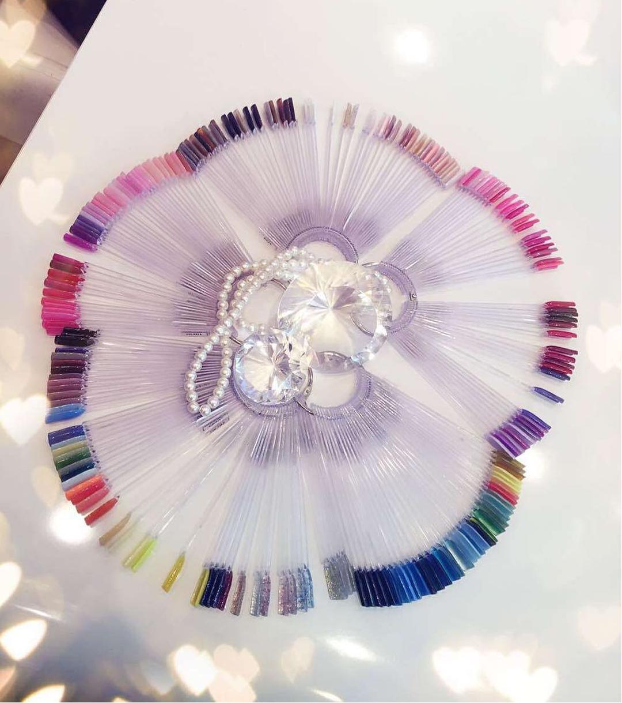
Top Modern Nail Trends in Vancouver 2026
The five styles below cover almost every Vancouver nail request right now. Mix and match — chrome on a micro French base is one of the most-booked combos at our salon.
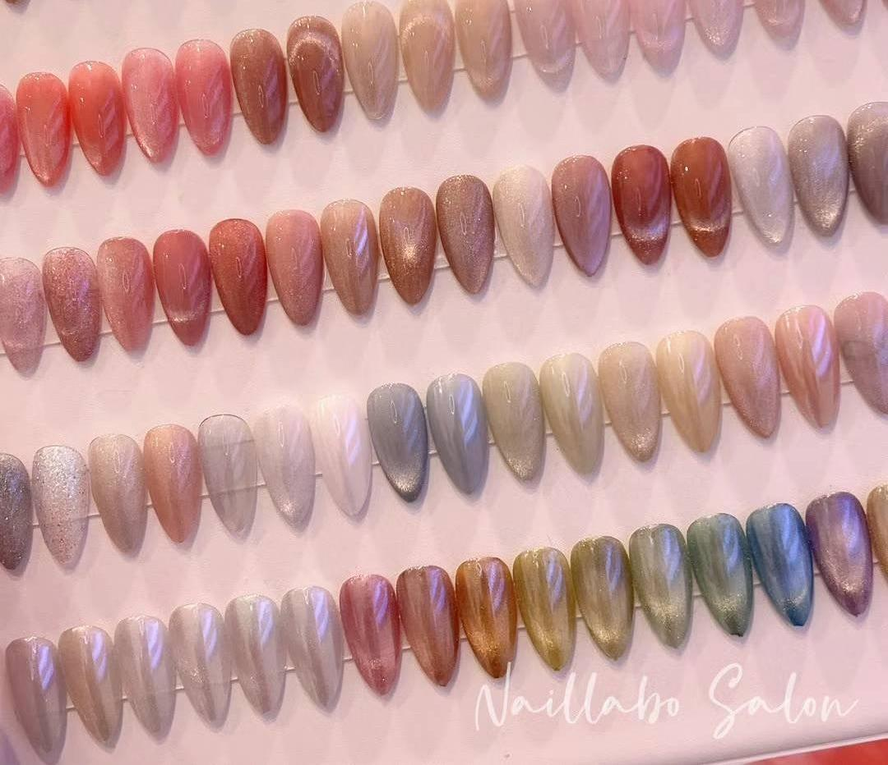
Cat-Eye Gel
Magnetic gel that creates a moving silver or gold stripe. Looks different in every light.
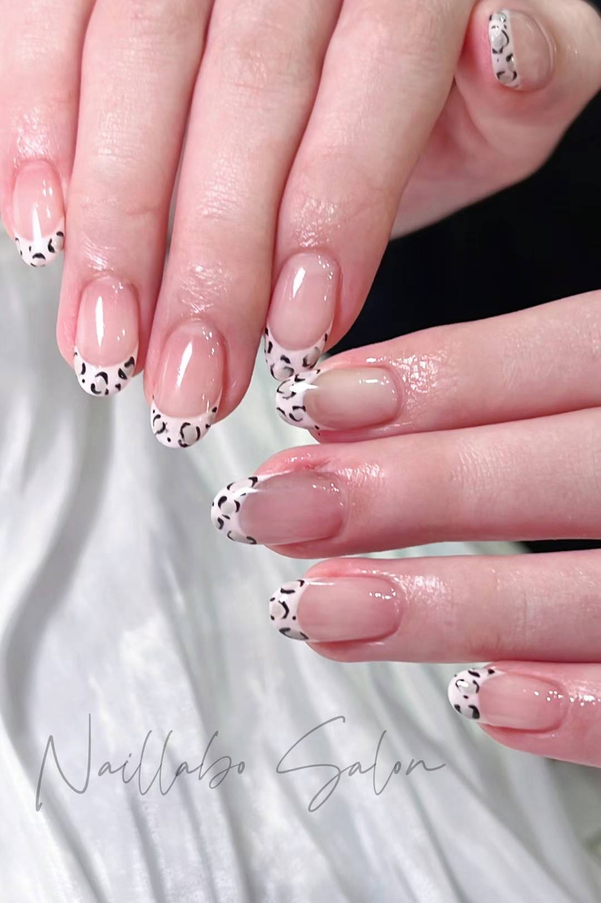
Micro French
A thin tip in white, brown, or red. Cleaner than a traditional French and works on short nails.
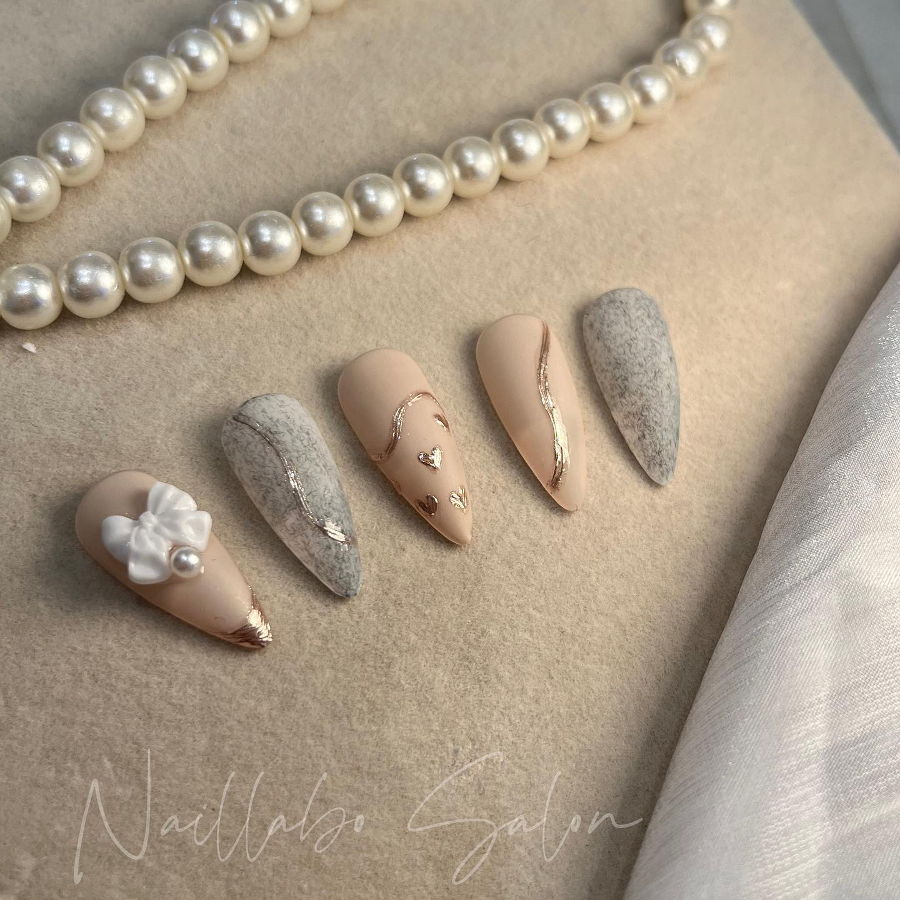
Glazed Pearl
Soft pearly shimmer over a milky base. The "glazed donut" effect everyone keeps asking for.
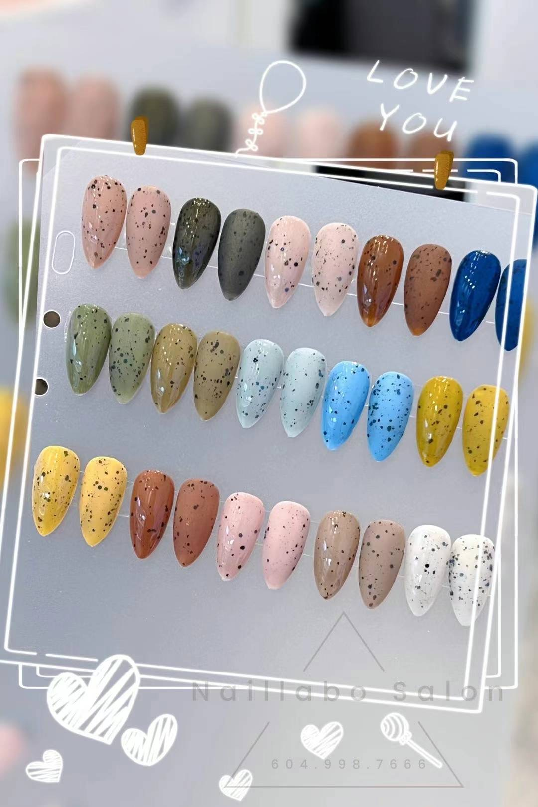
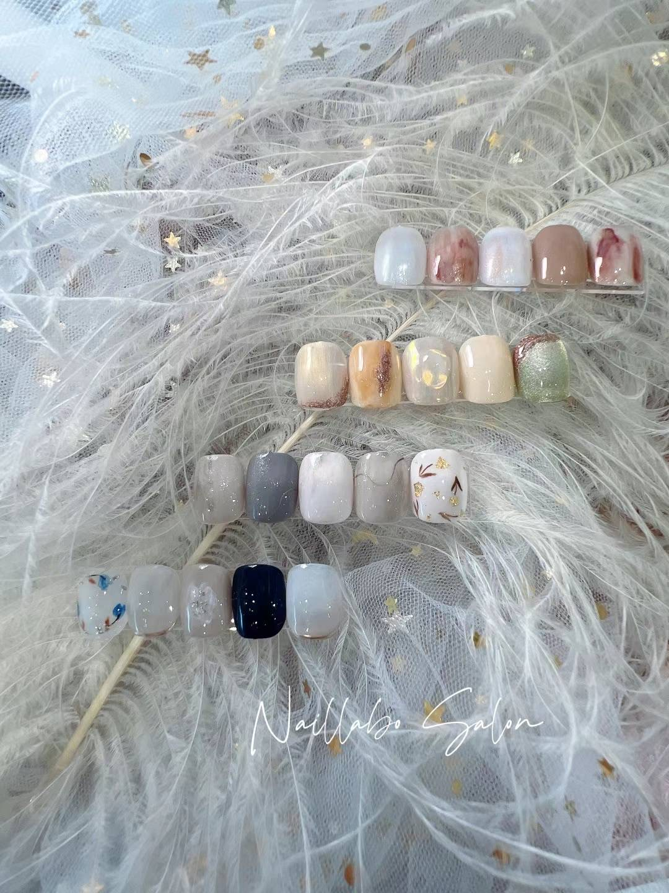
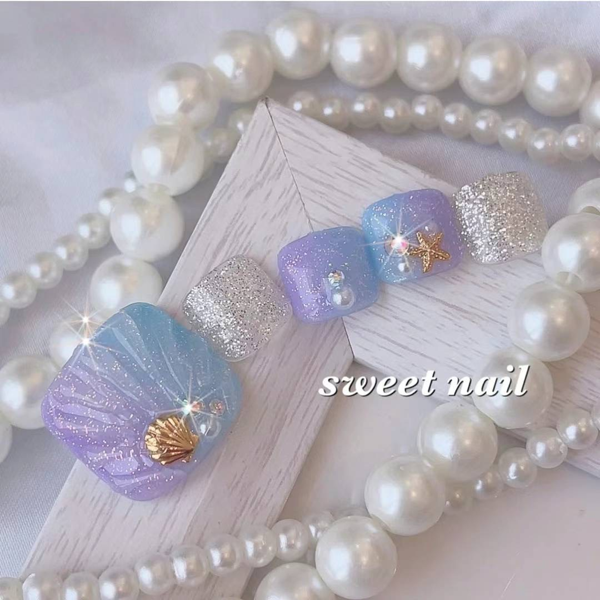

Picking the Right Shape for Your Hand
Shape matters more than colour for the modern look. Long stiletto and coffin sets still exist, but most clients are switching to shorter styles that hold up to typing, dishes, and gym days.
Almond
Soft and flattering on most hands. Works for both bare nails and full art.
Short Square
Clean and easy to maintain. Pairs well with milky or sheer polish.
Squoval
Square with rounded edges. The shape your tech will probably suggest if you say "low maintenance."
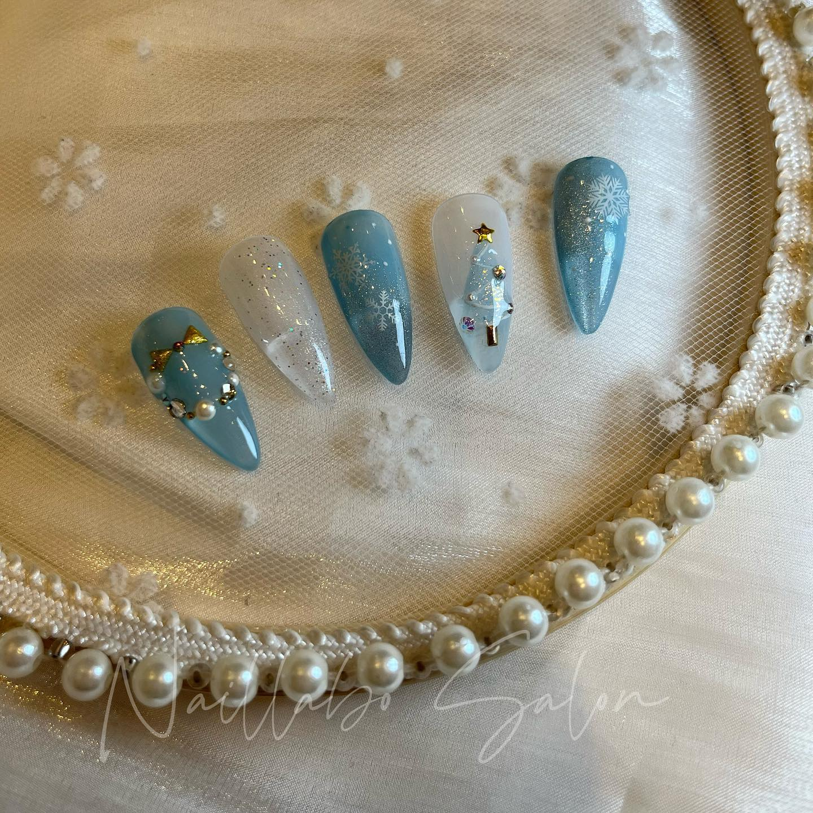
Gel vs. Builder Gel vs. Acrylic
If you have never been sure what the difference is, here is the short version.
- Gel polish — sits on your natural nail. Lasts 2 to 3 weeks. Good if your nails are healthy.
- Builder gel — adds strength and a tiny bit of length. Less damaging than acrylic for most people.
- Acrylic — for big length or full extensions. Stronger but needs more upkeep.
For a modern, low-key look, gel or builder gel usually wins.
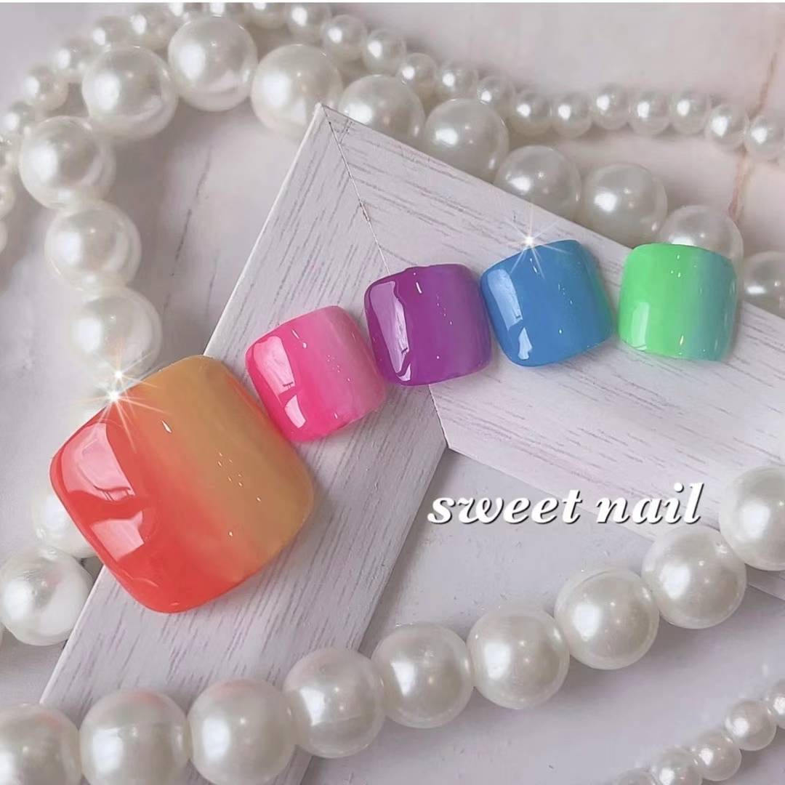
How to Make Your Set Last Longer
Even the cleanest modern set will lift early if you skip the basics. A few small habits go a long way.
Cuticle Oil Daily
The single most underrated step. Keeps the seal at the base of the nail flexible so gel does not lift early.
Gloves for Cleaning
Hot water and dish soap are the fastest way to dull a fresh chrome or glazed finish. Wear gloves.
Do Not Peel
If a corner lifts, book a fill instead of pulling it off. Peeling takes a layer of your natural nail with it.
Skip the Hot Tub Day One
Avoid hot tubs and saunas for the first 24 hours after a fresh set so the gel cures fully.
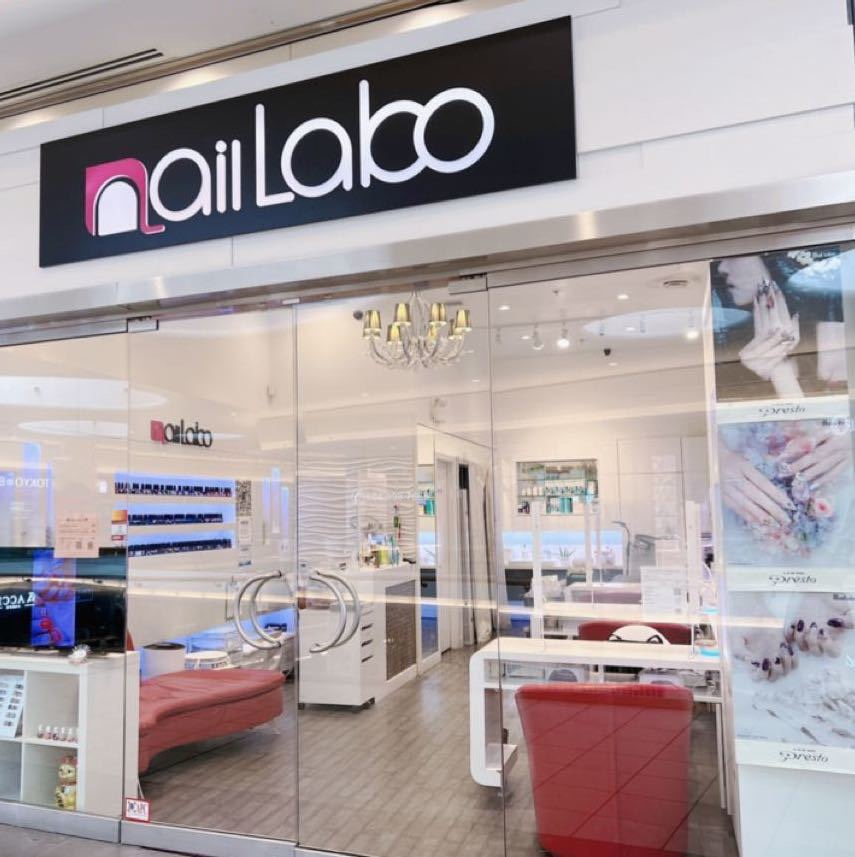
Where to Get Modern Nails Near Vancouver
If you are in or near downtown Vancouver, Richmond is a quick drive over the bridge — and that is where Naillabo Salon is based, inside Aberdeen Centre.
A few reasons it is worth the trip:
- Custom nail art on the menu, not a fixed list
- Gel manicure + pedicure combo at $128
- Eyelash extensions if you want to stack appointments
- Free parking — rare in this part of the Lower Mainland
- Open every day, 10 AM to 7 PM
Frequently Asked Questions (FAQ)
Ready for a Fresh Modern Set?
Book your nail appointment at Naillabo Salon in Richmond today.
Book Your Appointment Now